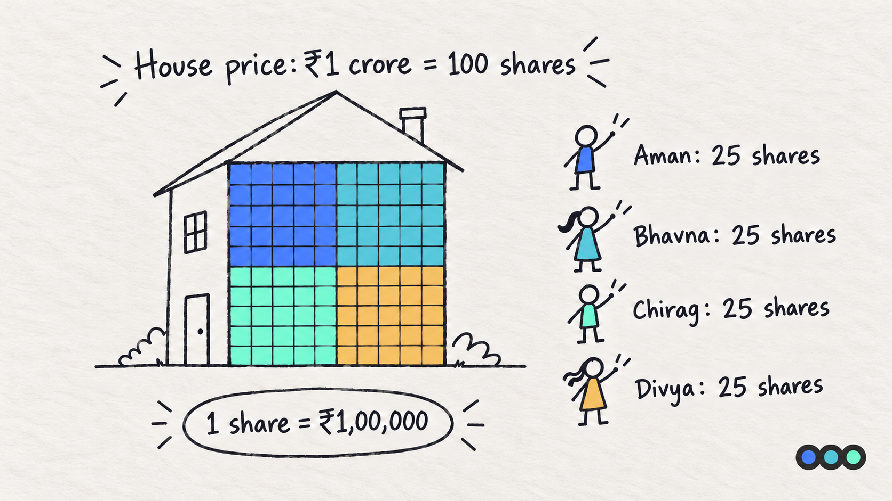
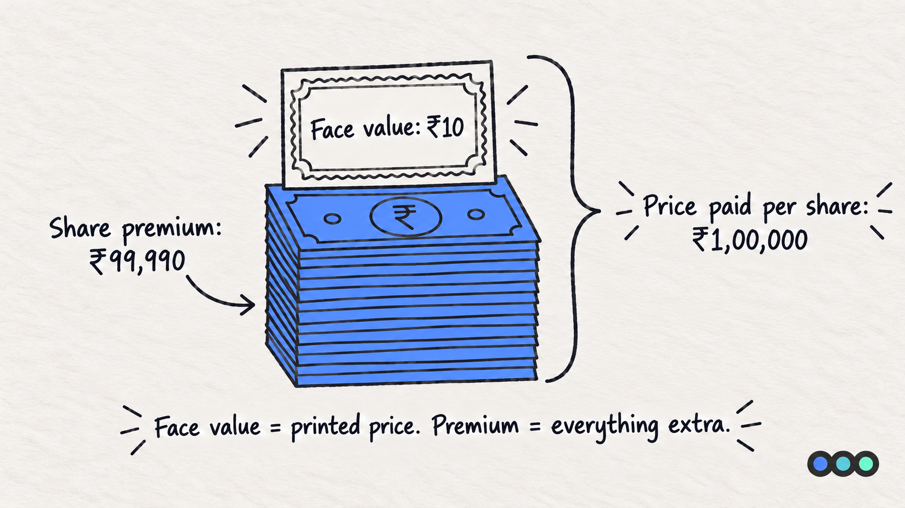
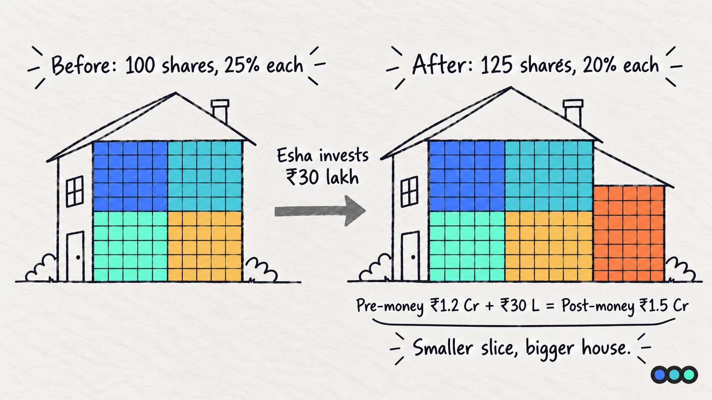
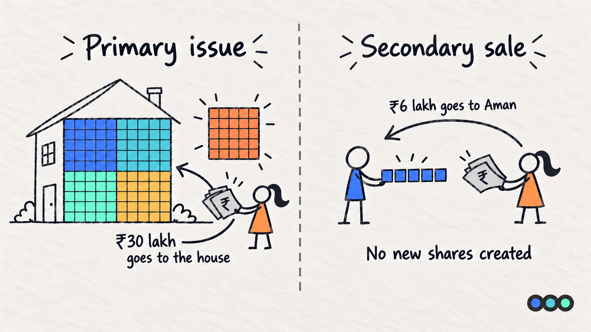
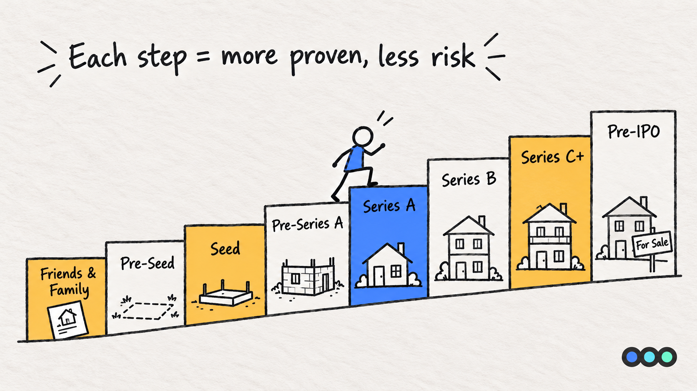
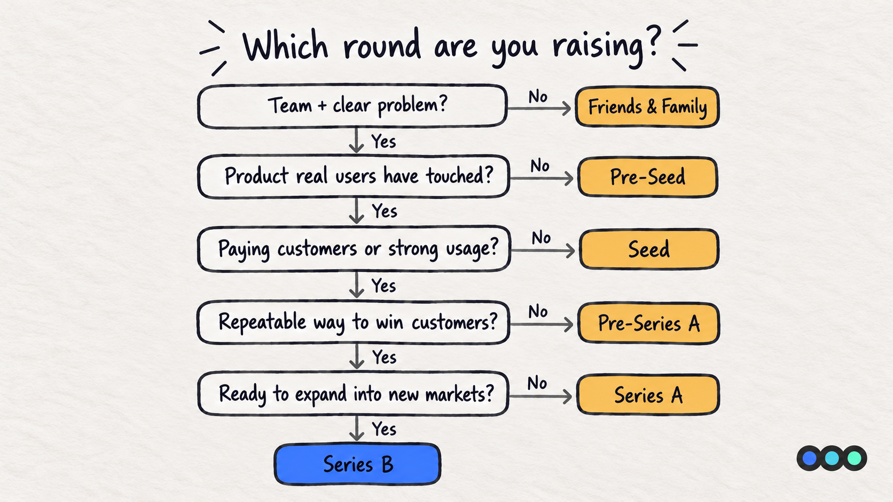

Prologue Blog · Finance for the Fundraising-Curious, Part 1
Fundraise Fundamentals
Four Friends
TL;DR
A fundraise is you selling a piece of your company in exchange for money. The piece is measured in shares. Each round (pre-seed, seed, Series A and so on) is not defined by how much you raise, but by what you have already proven. Figure out what you have proven, and you will know which round you are raising.
Let's Start With a House
Four friends, Aman, Bhavna, Chirag and Divya, decide to buy a house together for ₹1 crore. Each puts in ₹25 lakh, so each owns 25%.
Splitting things in percentages gets messy, so they agree that the house will be divided into 100 shares. Each friend gets 25 shares.

| Friend | Money put in | Shares | Ownership |
|---|---|---|---|
| Aman | ₹25,00,000 | 25 | 25% |
| Bhavna | ₹25,00,000 | 25 | 25% |
| Chirag | ₹25,00,000 | 25 | 25% |
| Divya | ₹25,00,000 | 25 | 25% |
| Total | ₹1,00,00,000 | 100 | 100% |
Share Price, Face Value and Share Premium
If the house costs ₹1 crore and is split into 100 shares, each share is worth:
₹1,00,00,000 ÷ 100 = ₹1,00,000 per share
That is the share price: what someone actually pays for one share.
Now the twist. On paper, each share certificate says it is worth just ₹10. That is the face value. Think of it as the printed price on the certificate. It is a legal and accounting number fixed when the shares are created. It does not change because the house became more valuable.
So where does the remaining ₹99,990 go? That extra amount is called the share premium.
| Per share | Amount |
|---|---|
| Price paid (share price) | ₹1,00,000 |
| Face value (printed on the certificate) | ₹10 |
| Share premium (the extra) | ₹99,990 |

Why this matters for your startup: When an investor buys shares in your company at ₹5,000 per share and the face value is ₹10, your company's books show ₹10 per share as share capital and ₹4,990 per share as securities premium. Both are money the investor put in. You will see both lines on your balance sheet after every round.
Now, the Fundraise
A few years later, the friends want to renovate. They need ₹30 lakh. None of them has spare cash, so they invite a fifth friend, Esha, to come in.
The house is now worth ₹1.2 crore. That is the value before Esha's money comes in, also called the pre-money valuation.
New share price: ₹1.2 crore ÷ 100 shares = ₹1,20,000 per share.
Esha puts in ₹30 lakh, so she gets ₹30,00,000 ÷ ₹1,20,000 = 25 new shares.
Important: nobody sold their shares to Esha. The house simply issued 25 new shares, and the ₹30 lakh went into the house (the renovation), not into anyone's pocket. That is exactly what a startup fundraise is.
| Friend | Shares before | Ownership before | Shares after | Ownership after |
|---|---|---|---|---|
| Aman | 25 | 25% | 25 | 20% |
| Bhavna | 25 | 25% | 25 | 20% |
| Chirag | 25 | 25% | 25 | 20% |
| Divya | 25 | 25% | 25 | 20% |
| Esha | 0 | 0% | 25 | 20% |
| Total | 100 | 100% | 125 | 100% |

Notice three things:
- Each original friend went from 25% to 20%. That drop is called dilution.
- Nobody lost money. Each friend's 25 shares are worth 25 × ₹1,20,000 = ₹30 lakh, more than the ₹25 lakh they put in.
- The house is now worth ₹1.2 crore + ₹30 lakh = ₹1.5 crore. That is the post-money valuation.
Napkin Math Box
Five formulas, worked through on the house.
| What you want to find | Formula | House example |
|---|---|---|
| Share price | Pre-money valuation ÷ Existing shares | ₹1.2 Cr ÷ 100 = ₹1,20,000 |
| New shares issued | Amount raised ÷ Share price | ₹30 L ÷ ₹1,20,000 = 25 |
| Post-money valuation | Pre-money + Amount raised | ₹1.2 Cr + ₹30 L = ₹1.5 Cr |
| New investor's ownership | Amount raised ÷ Post-money | ₹30 L ÷ ₹1.5 Cr = 20% |
| Share premium per share | Share price − Face value | ₹1,20,000 − ₹10 = ₹1,19,990 |
So What Is a Fundraise?
A fundraise is your company issuing new shares to an investor in exchange for money that goes into the company. The investor gets ownership. You get capital to grow. Your percentage goes down, but if you use the money well, the value of what you own goes up.
Primary Issue vs Secondary Sale
There are two ways shares can change hands. Only one of them puts money into the company.
Primary issue: the company creates new shares. This is what happened with Esha. The house created 25 new shares for her, and her ₹30 lakh went into the house for the renovation. Total shares went from 100 to 125, so everyone else's percentage went down.
Secondary sale: an existing owner sells their own shares. Now say Aman needs cash. He sells 5 of his 25 shares to Esha at ₹1,20,000 each, which is ₹6 lakh. That money goes to Aman, not the house. No new shares are created, the house still has 125 shares, and only Aman's stake shrinks.

Side by side:
| Primary issue | Secondary sale | |
|---|---|---|
| Who sells the shares | The company | An existing shareholder |
| New shares created? | Yes | No |
| Where the money goes | Into the company | To the seller |
| Whose stake shrinks | Everyone's, in percentage terms | Only the seller's |
| House example | Esha gets 25 new shares for ₹30 lakh | Aman sells 5 of his shares to Esha for ₹6 lakh |
In startup terms, when founders say they raised a round, they mean a primary issue. A round can sometimes include a small secondary, for example an early angel selling part of their stake to the new investor. We will go deeper into secondaries later in the series.
The Rounds, Explained Like a House Project
Startups raise money in stages. Each stage has a name, but the name is really a shorthand for how much risk is left in the business.

| Round | House analogy | What you have usually proven | Who usually invests | Typical raise (India) |
|---|---|---|---|---|
| Friends & Family / Bootstrapping | A sketch of the house on paper | An idea and a founder willing to commit | Founders, friends, family | Not tracked |
| Pre-Seed | You have bought the plot | A team, a problem worth solving, an early product or prototype | Angels, angel networks, accelerators, micro VCs | ₹50 lakh to ₹2.5 crore |
| Seed | Foundation is laid | A working product, first customers, early signs people want it | Angels, seed funds, early-stage VCs | ₹2 crore to ₹17 crore |
| Pre-Series A / Bridge | Walls are up, roof is pending | Growing revenue but not yet a repeatable growth engine | Existing investors, seed funds | Not tracked |
| Series A | The house is livable | Product-market fit and a repeatable way to acquire customers | Institutional VCs | ₹22 crore to ₹90 crore |
| Series B | Adding floors | Unit economics that work, ready to scale | Growth-focused VCs | ₹45 crore to ₹215 crore |
| Series C and beyond | Building the next house | Market leadership, new markets or products, path to profitability | Late-stage VCs, PE funds | ₹70 crore to ₹450 crore |
| Pre-IPO | Getting the house ready to list for sale | Scale, governance, audited track record | PE funds, family offices, institutional investors | Varies widely |
Middle 50% of disclosed rounds for Indian startups, October 2025 to September 2026. Source: Tracxn. Undisclosed rounds are excluded, so smaller deals are likely under-represented. Friends and Family and Pre-Series A are not tracked as separate stages. The Pre-IPO sample is small and mixes deal types, so no range is quoted.
A Guide to Figuring Out Which Round You Are Raising
Founders often pick a round name based on how much they want to raise. Investors look at it the other way around: what have you proven? Answer these questions honestly, top to bottom. The first "No" is roughly where you are.
| # | Question | If "No", you are likely raising |
|---|---|---|
| 1 | Do you have a committed founding team and a clear problem? | Friends & Family |
| 2 | Do you have a product or prototype that real users have touched? | Pre-Seed |
| 3 | Do you have paying customers or strong, measurable usage? | Seed |
| 4 | Is revenue growing consistently month on month? | Seed / Pre-Series A |
| 5 | Can you show a repeatable way to acquire customers, and do the numbers per customer make sense? | Pre-Series A |
| 6 | Do you know exactly where the next ₹1 of growth spend goes and what it returns? | Series A |
| 7 | Are you ready to expand into new markets or products with a proven core business? | Series B |

Two honest caveats:
- Round names are not standardised. One fund's "seed" is another fund's "pre-Series A". Focus on what you have proven, not the label.
- Raising a "bigger" round than your proof supports usually means a valuation you cannot grow into. That makes the next round harder.
Key Terms
Everything this post defined, in one place.
- Share price
- What someone actually pays for one share. Pre-money valuation divided by the number of existing shares. In the house, ₹1.2 crore divided by 100 shares is ₹1,20,000.
- Face value
- The printed price on the share certificate. A legal and accounting number fixed when the shares are created. It does not change when the company becomes more valuable. In the house it is ₹10.
- Share premium
- The part of the price paid that sits above face value. Share price minus face value. At ₹1,20,000 a share with a ₹10 face value, the premium is ₹1,19,990. On an Indian balance sheet it appears as securities premium.
- Pre-money valuation
- What the company is worth before the new investment arrives. The house is worth ₹1.2 crore before Esha puts her money in.
- Post-money valuation
- Pre-money valuation plus the amount raised. ₹1.2 crore plus ₹30 lakh is ₹1.5 crore. A new investor's ownership is the amount raised divided by the post-money.
- Dilution
- The fall in your ownership percentage when a company issues new shares. The four friends go from 25% each to 20% each. Their percentage drops, but the value of what they hold does not.
- Primary issue
- The company creates new shares and the money goes into the company. This is what founders mean by raising a round. Everyone's percentage falls.
- Secondary sale
- An existing shareholder sells shares they already own. The money goes to the seller, not the company. No new shares are created and only the seller's stake shrinks.
Common Founder Mistakes
- Naming the round by the amount. Raising ₹10 crore does not make it a Series A if you have not shown product-market fit.
- Confusing pre-money and post-money. "₹30 lakh at ₹1.5 crore" means 20% if ₹1.5 crore is post-money, but only about 16.7% if it is pre-money. Always ask.
- Thinking dilution means losing money. Your percentage falls, but the value of your shares should rise if the money is used well.
- Ignoring face value and premium. They show up in your balance sheet, your filings and your share allotment paperwork. Your CA will ask.
This post is general information, not financial, legal or tax advice. It is written to help founders recognise the terms they will meet when they raise. How the rules apply depends on how your round is structured and who is investing, so check your own deal with your CA or company secretary before you sign.
Next in the Series
Part 2: Same Money, Different Paper. Esha gave ₹30 lakh. But did she get plain shares, preference shares, or a promise of shares later? We look at the instruments Indian VCs actually use: equity, CCPS, CCDs and iSAFE. Read Part 2 now.
Not sure which round you are raising?
That is the conversation we have with founders most often, and it is rarely about the number. It is about what you have proven, and whether your deck, your model and your story all say the same thing.
Prologue works with founders before they raise. If you are planning a round and want a second opinion on where you actually stand, talk to us.